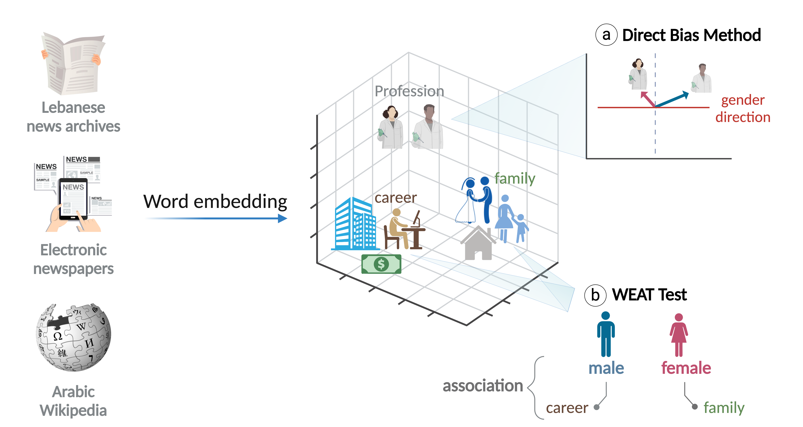
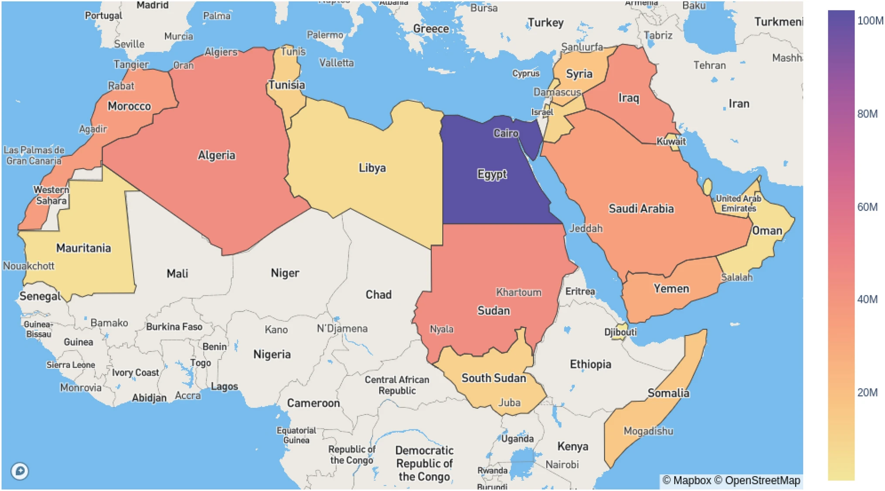

2026
AdabNER: Arabic Digital Archive Books with Nested Entity Recognition ACL 2026
Proceedings of ACL 2026 (Volume 1: Long Papers), pp. 33382–33396
PhD student at Sorbonne Université (ISIR — MLIA). Large language models, information extraction & Arabic NLP.
I am a PhD researcher at the Institut des Systèmes Intelligents et de Robotique (ISIR), Sorbonne Université, within the MLIA team, funded by a Marie Skłodowska-Curie COFUND Fellowship (SOUND.AI). My work sits at the intersection of large language models and low-resource languages, with a focus on Arabic NLP — benchmarking model knowledge, retrieval-augmented generation, bias detection, and information extraction.
Previously, I was a research and teaching assistant at the American University of Beirut and its AI Hub, where I built evaluation benchmarks, taught graduate-level LLM modules, and led AI education programmes for students.
Proceedings of ACL 2026 (Volume 1: Long Papers), pp. 33382–33396


arXiv:2501.00559

PLOS Digital Health 2(3), e0000211

Social Network Analysis and Mining 12(1), 71